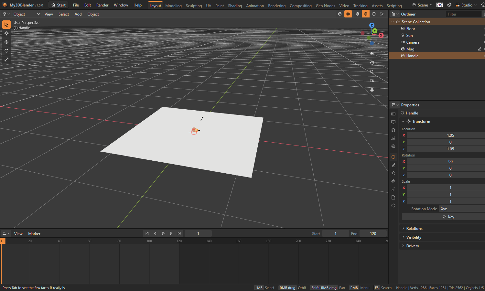
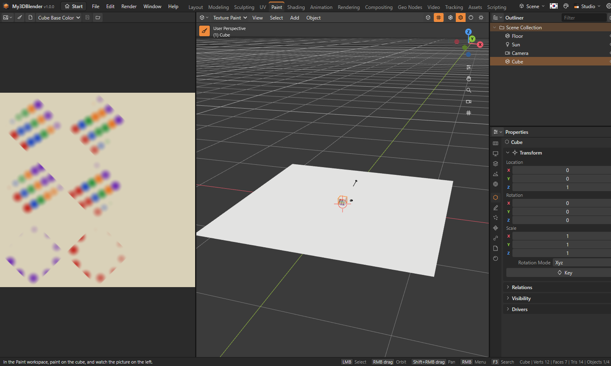

My3DBlender Tutorial
A hands-on course for first-time users. Followed from the start, it goes from the basics to simulation, Python and video editing. Each tutorial takes from 5 to 20 minutes. To see a finished one, open its sample from the start screen.
Before you start
| Action | Input |
|---|---|
| Turn the view | Drag with the middle button, Alt + left button, or drag the axis widget at the top right |
| Zoom | Wheel |
| Pan | Shift + drag with the middle button |
| Undo | Ctrl + Z |
Keys go to the area the mouse is over. If a key does nothing, move the mouse over the 3D view.
Tutorial 1. Make a mug (beginner)
Sample: subsurf-mug

The body
- On the start screen press New Project.
- With the cube selected and the mouse over the 3D view, press X to delete it.
- Choose Add › Mesh › Cylinder in the header.
- Open the Adjust Last Operation panel at the bottom left and set Vertices to 48.
Hollow it out
- Press Tab for Edit Mode, then 3 for face selection.
- Click the top face.
- Press I. In the panel set Thickness to 0.1.
- Press E, move the mouse down and click to confirm, down to just above the bottom.
The handle
- Press Tab to go back to Object Mode.
- Choose Add › Mesh › Torus.
- Press G, X, type 1 and press Enter to move it aside.
- Press R, X, type 90 and press Enter to stand it up.
- Shift-click the mug and the handle and press Ctrl + J to join them.
Smooth and colour it
- In the Modifiers tab of the Properties editor choose Add Modifier › Generate › Subdivision Surface.
- Choose Object › Shade Smooth.
- In the Material tab press New Material, and set the base colour and a Roughness of 0.2.
- Check the result with the Material Preview button at the right of the header.
Spin and render it
- Select the mug and press I at frame 1.
- Move the timeline to frame 120, press R, Z, type 360 and press Enter. Press I again.
- Right-click in the timeline, choose Interpolation › Linear and press Space to play.
- Set Samples to 64 in the Render tab and press F12.
- Render › Save Render saves a PNG. Ctrl + S saves the project.
Tutorial 2. Unwrap by seams and paint (intermediate)
Sample: texture-painted

- In a New Project select the cube, press Tab, then 2 for edge selection.
- Press A to select all and choose Mesh › Edge › Mark Seam. The red lines are where it is cut.
- Press U. In the UV workspace see the six faces laid out.
- Press Tab to leave, and go to the Paint workspace.
- Press N for the sidebar and press Add Paint Texture.
- Choose a colour and drag on the cube. The paint carries on over the corners, and the picture on the left shows it.
- With the brush button of the Image Editor on the left, you can also drag on the picture.
Tutorial 3. A bouncing ball and its path (intermediate)
Samples: bouncing-ball, motion-paths
- In a New Project delete the cube, choose Add › Mesh › UV Sphere, and press G, Z, 3, Enter to raise it.
- Press I at frame 1.
- Move to frame 12, press G, Z to bring it to the floor, and press I.
- Repeat at frames 24 and 36, each time a little lower.
- Drag keys in the Dope Sheet to change the timing.
- Object › Animation › Calculate Motion Path draws the ball's way as a line. Set its start and end in the Adjust Last Operation panel.
- Onion Skin shows it before and after the current frame, in blue and green.
Tutorial 4. Make smoke (advanced)
Samples: smoke-plume, campfire

- In a New Project make the cube larger: press S, 3, Enter. It becomes the domain.
- In the Physics tab press Smoke Domain. The box turns into lines.
- Add Add › Mesh › Ico Sphere, put it low in the box with G, Z, -2, Enter, and shrink it with S, 0.4, Enter.
- In the Physics tab press Smoke Flow.
- In the Output tab set the frames from 1 to 40, and press Bake All Simulations.
- Press Space to play. The smoke rises.
- Change the flow's type to Both and bake again, and it catches fire. Press F12 to render.
Tutorial 5. Build with Python (advanced)
Samples: python-tower, python-grid

- Go to the Scripting workspace. The Text Editor has
script.pyopen. - Replace its text with this.
import bpy
from math import sin, cos
for i in range(36):
a = i * 0.35
bpy.ops.mesh.primitive_ico_sphere_add(radius=0.25, location=(cos(a) * 3, sin(a) * 3, i * 0.12))
bpy.context.active_object.name = f"Bead {i:02d}"
print("Made", len(bpy.data.objects), "objects")- Press Ctrl + Enter. A spiral appears, and one Ctrl + Z takes it all away.
- A mistake is reported in the status bar with its line number.
- Type
len(bpy.data.objects)in the console.
Tutorial 6. Edit a video (advanced)
Samples: title-card, story-scenes

- Go to the Video workspace.
- Choose Add › Color in the header. In the panel on the right set Length to 48.
- Drag the ruler to frame 30 and choose Add › Color again. It overlaps the first, so it goes to the channel above. Change its colour.
- With the later strip selected, press Cross. The overlap now fades.
- Add › Text adds a title; edit it in the panel.
- Move the playhead and press K to cut, X to delete.
- Export Video saves a WebM file.
Tutorial 7. Motion tracking (advanced)
Sample: camera-solve

- On the start screen open the Motion Tracking sample. The Tracking workspace opens.
- The track list on the right has 9 tracks. Move the timeline and the markers follow the dots.
- Press Solve Camera. Points and a camera appear in the 3D view.
- See the solve error under the track list.
- To try your own, Open a video, click clear points in the picture to place markers, and press Track ▶.
Next steps
- Open the samples level by level and follow the hints in the status bar. The list is in
sample/README.md. - Everything the program does is in the User's Guide.
- Help › Feature Coverage shows what is implemented.